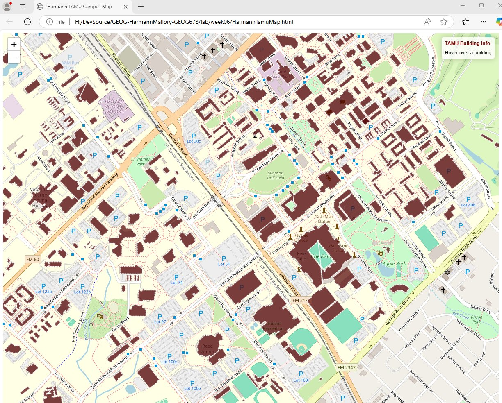

Featured WebGIS project
Texas A&M Campus Building Explorer
Interactive campus map built with Leaflet and a GeoJSON-style feature collection. Demonstrates building-footprint rendering, hover highlighting, feature information, and map navigation across approximately 889 features.
JavaScriptLeafletGeoJSON
Explore project files ↗